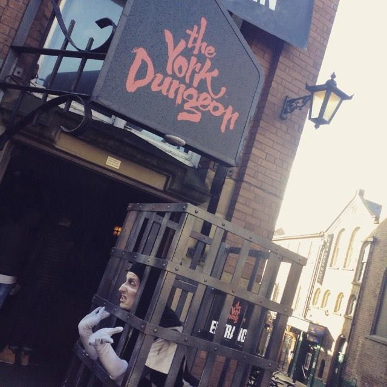

History made fun at The York Dungeons
Published: 12th November, 2016
On Saturday 5th November I went to The York Dungeons with the History society as part of the give it a go week at Huddersfield University. I’d never been before but from what people had told me I expected it to be scary but funny at the same time.
The trip cost £10 in total and included both the transport to and from York as well as entry into the dungeons.
The bus left the University at around 9am and got us into York at 10:30am which gave us some time to check out the sights before our tour of the dungeons which was at 1:30pm. While wandering around York and browsing around the shops I took the opportunity to take some photos.
Fast forward a few hours and I was queuing outside the dungeons waiting to go in. The tour itself lasted 75 minutes and went told the story of many different events that happened in York from the Vikings to Guy Fawkes through actors, props and special effects.
I really enjoyed the tour, I found it quite factual, scary at times but with some very funny moment which made it a unique experience. Without giving too much away for those that haven’t been before my favourite part was the leeches moving around the benches as it felt super weird. The performances were fantastic which helped in bringing the experience to life. The final bit of the tour, which just happens to be the best, is the gift shop! I, of course, grabbed myself a few souvenirs to take away.
After the tour, we had some time to spare before the bus journey back so I thought it was only right to check out York’s social side by visiting Bora Bora Cocktail bar and All Bar One where I sampled a few cocktails.


After a quick stop at McDonald’s for some food, we were all on the bus heading back to University. We got back in decent time as well.
I found the experience of The York Dungeons brilliant and I would recommend everyone to go!
The York Dungeons: is a uniquely thrilling attraction that takes you back to York’s darkest history.